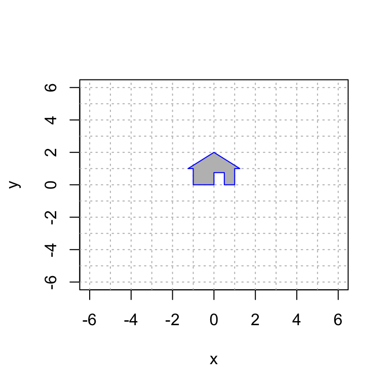
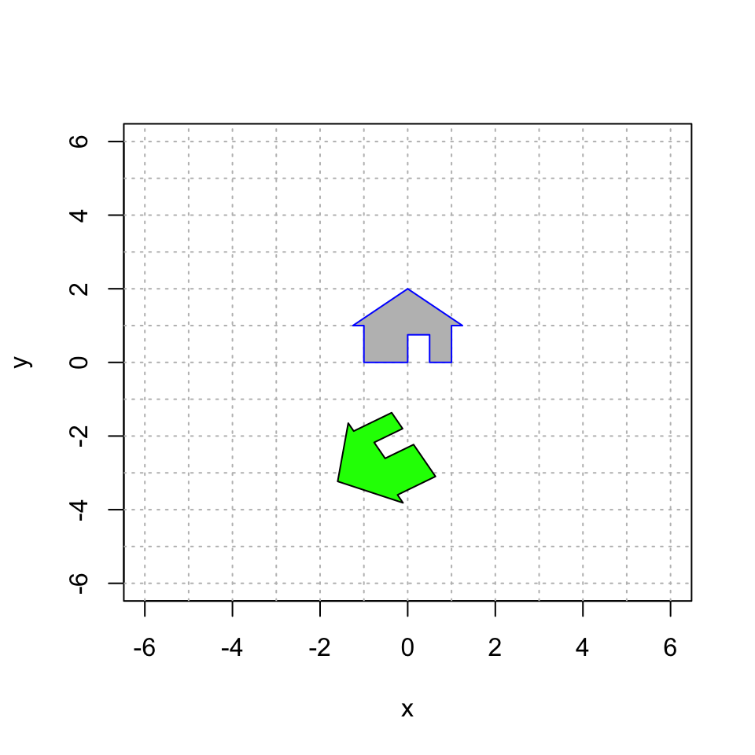
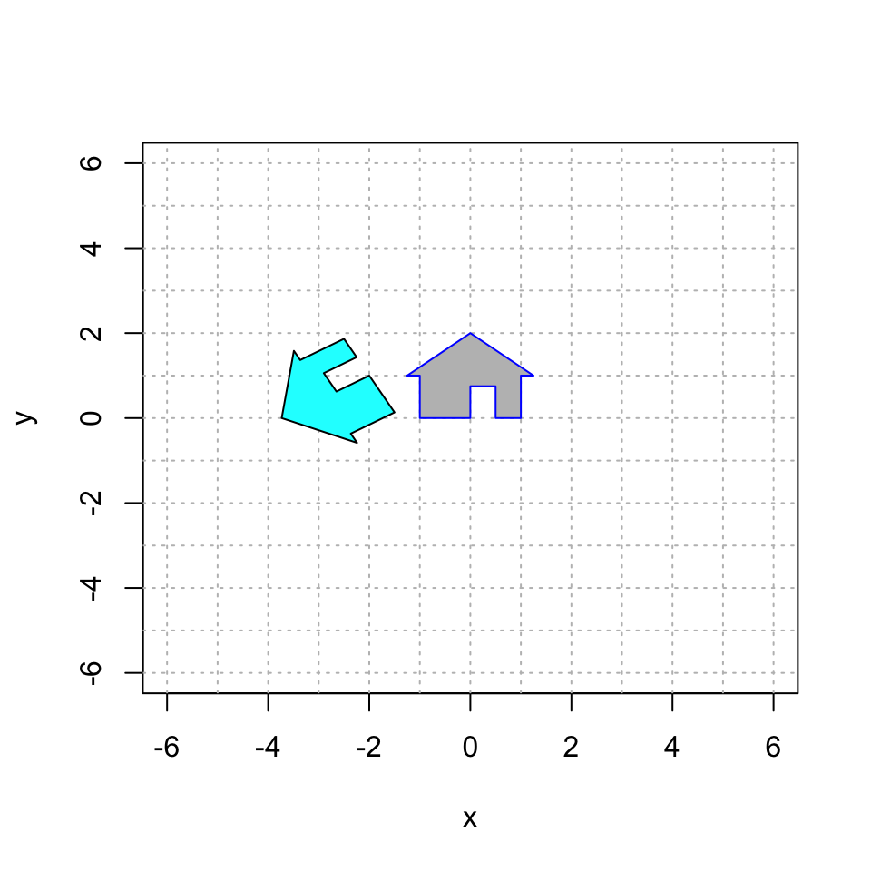
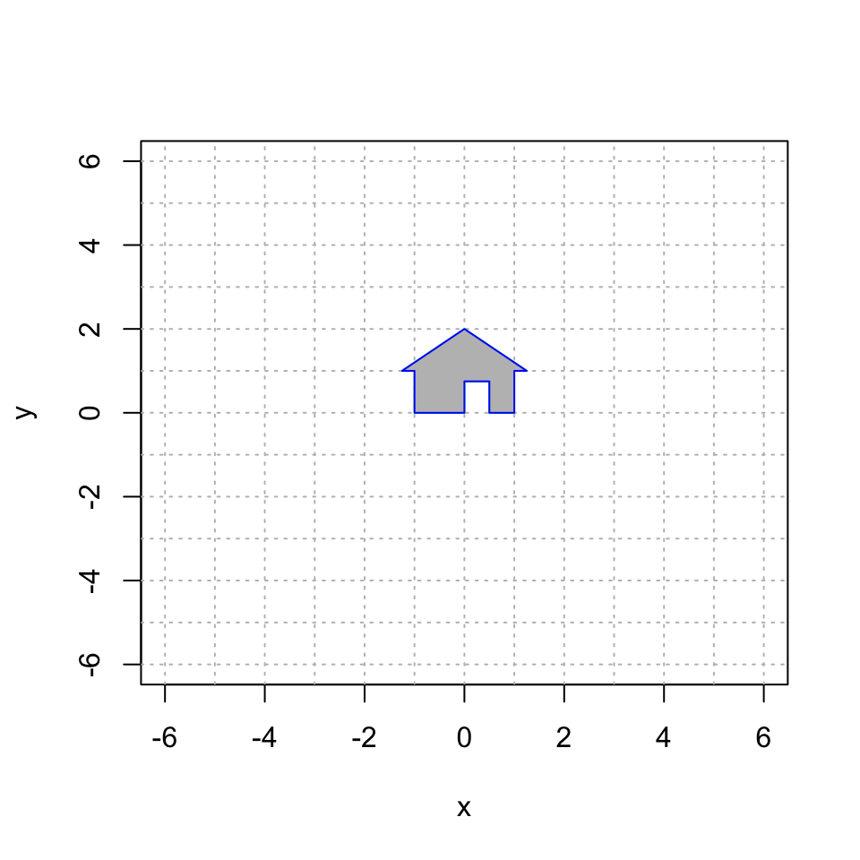
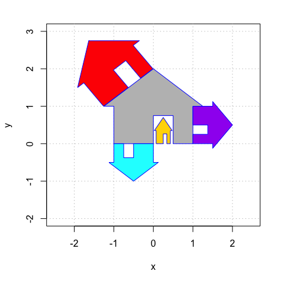

Vector 14 2D Translations with Homogeneous Coordinates
A translation of the plane shifts every vector by a constant vector. For example, the mapping \[ S \left( \begin{bmatrix} x \\ y \end{bmatrix} \right) = \begin{bmatrix} x \\ y \end{bmatrix} + \begin{bmatrix} 3 \\ -4 \end{bmatrix} = \begin{bmatrix} x +3 \\ y - 4 \end{bmatrix} \] translates every vector in the plane by \(\begin{bmatrix} 3 \\ -4~ \end{bmatrix}\).
The bad news: This is a simple and natural mapping, but it is not a linear transformation! We know that a linear transformation must map \(\mathbb{0}\) to \(\mathbb{0}\), and that is certainly not the case when we translate! This restriction is rather limiting for computer graphics: we can never move our image away from the origin.
The good news: We can work around this problem by creating a 3D linear transformation \(T: \mathbb{R}^3 \rightarrow \mathbb{R}^3\) and then retricting our attention to a plane in this larger space. As discussed in the Homogeneous Coordinates video, we do the following:
- Embed the \(xy\)-plane \(\mathbb{R}^2\) into the plane \(z = 1\) in \(\mathbb{R}^3\).
- Translate in \(\mathbb{R}^3\) using a mapping \(T\) that maps this horizontal plane to itself. That is: \[ T \left( \begin{bmatrix} x \\ y \\ 1 \end{bmatrix} \right) = \begin{bmatrix} u \\ v \\ 1 \end{bmatrix}. \]
- When we create our plot, we use only the first two coordinates and ignore the third coordinate (which is still 1).
In summary, during our calculations, we replace the vector \(\begin{bmatrix} x \\ y \end{bmatrix}\) in \(\mathbb{R}^2\) with the homogeneous coordinate vector \(\begin{bmatrix} x \\ y \\ 1 \end{bmatrix}\) in \(\mathbb{R}^3\).
14.1 Translation
Here is my house once again. Note that we have add \(z=1\) as the third coordinate to each point. However, when plotting, we only use the first two coordinates.
# the third entry always = 1
house = cbind(c(0,0,1), c(0,3/4,1), c(1/2,3/4,1), c(1/2,0,1), c(1,0,1), c(1,1,1), c(5/4,1,1), c(0,2,1), c(-5/4,1,1), c(-1,1,1), c(-1,0,1), c(0,0,1));
# only plot the first two coordinates
plot(house[1,],house[2,],type="n",xlim=c(-6,6),ylim=c(-6,6),xlab="x",ylab="y")
abline(h=-6:6, v=-6:6, col="gray", lty="dotted")
polygon(house[1,], house[2,], col = "gray", border = "blue")
Next, we translate by \(\begin{bmatrix} 3 \\ - 4 \end{bmatrix}\) by using the linear transformation \[ T \left( \begin{bmatrix} x \\ y \\ z \end{bmatrix} \right) = \begin{bmatrix} 1 & 0 & 3 \\ 0 & 1 & -4 \\ 0 & 0 & 1 \end{bmatrix} \begin{bmatrix} x \\ y \\ z \end{bmatrix}. \] Let’s check that this has the desired effect on a homogeneous coordinate vector: \[ T \left( \begin{bmatrix} x \\ y \\ 1 \end{bmatrix} \right) = \begin{bmatrix} 1 & 0 & 3 \\ 0 & 1 & -4 \\ 0 & 0 & 1 \end{bmatrix} \begin{bmatrix} x \\ y \\ 1 \end{bmatrix} = \begin{bmatrix} x+3 \\ y - 4 \\ 1 \end{bmatrix}. \] It worked! Note that this linear transformation maps every horizontal plane to itself. For the plane \(z=1\) (and only for this plane!) we get the exact translation that we desire. So it is crucial that \(z=1\). That’s the magic of homogeneous coordinates.
Let’s do this calculation in R and plot the first two coordiantes:
A = cbind(c(1,0,0),c(0,1,0),c(3,-4,1))
house2 = A %*% house
# only plot the first two coordinates
plot(house[1,],house[2,],type="n",xlim=c(-6,6),ylim=c(-6,6),xlab="x",ylab="y")
abline(h=-6:6, v=-6:6, col="gray", lty="dotted")
polygon(house[1,], house[2,], col = "gray", border = "blue")
polygon(house2[1,], house2[2,], col = "pink", border = "black")
14.2 Translation and then Rotation
We know plenty 2D linear transformation, including rotation, reflection and shear mappings. We can turn any of them into a 3D transformation by appending a row and a column with a 1 in the lower right corner and zero everywhere else. For example, the 2D rotation \[ \begin{bmatrix} \cos \theta & -\sin \theta~ \\ \sin \theta & \cos \theta \end{bmatrix} \] becomes the 3D transformation \[ \begin{bmatrix} \cos\theta & -\sin\theta~ & 0 \\ \sin\theta & \cos\theta &0 \\ 0 & 0 & 1 \end{bmatrix}. \] This mapping rotates 3D space around the \(z\)-axis.
So let’s combine two operations: a translation and a rotation. First, let’s translate by \(\begin{bmatrix} -2 \\ 1 \end{bmatrix}\) and then rotate counterclockwise by \(2 \pi/3\). And remember: the matrix closest to the vector acts first. So if we want to translate first, the translation matrix needs to be to the right of the rotation matrix:
\[ T \left( \begin{bmatrix} x \\ y \\ z \end{bmatrix} \right) = \begin{bmatrix} \cos \frac{2\pi}{3} & -\sin\frac{2\pi}{3}~ & 0 \\ \sin\frac{2\pi}{3} & \cos\frac{2\pi}{3} & 0 \\ 0 & 0 & 1 \end{bmatrix} \begin{bmatrix} 1 & 0 & -2 \\ 0 & 1 & 1 \\ 0 & 0 & 1 \end{bmatrix} \begin{bmatrix} x \\ y \\ z \end{bmatrix}. \]
## [,1] [,2] [,3]
## [1,] 1 0 -2
## [2,] 0 1 1
## [3,] 0 0 1## [,1] [,2] [,3]
## [1,] -0.5000000 -0.8660254 0
## [2,] 0.8660254 -0.5000000 0
## [3,] 0.0000000 0.0000000 1## [,1] [,2] [,3]
## [1,] -0.5000000 -0.8660254 0.1339746
## [2,] 0.8660254 -0.5000000 -2.2320508
## [3,] 0.0000000 0.0000000 1.0000000
14.3 Rotation and then Translation
Let’s reverse the order of these matrices and see that we get a different transformation.
## [,1] [,2] [,3]
## [1,] -0.5000000 -0.8660254 -2
## [2,] 0.8660254 -0.5000000 1
## [3,] 0.0000000 0.0000000 1
Indeed, these two transformations are different! So the order matters.
14.4 Your Turn
Here are a couple of plots that you should try to reproduce using homogeneous coordinates.
14.4.1 House of Orange
Here is a picture of a gray house and a larger, upside-down orange house. Work as a group to reproduce this image using homogeneous coordinates.

You will have to use a combination of translation, rotation, and expansion. You will do this by multiplying three matrices. Think carefully and experiment. Remember that the order of your matrices matters, and the rightmost one happens first.
#############################
# your code defining the 3x3 matrices A1 and A2
A1 = cbind(c(1,0,0), c(0,1,0), c(0,0,1))
A2 = cbind(c(1,0,0), c(0,1,0), c(0,0,1))
A3 = cbind(c(1,0,0), c(0,1,0), c(0,0,1))
A = A3 %*% A2 %*% A1
#############################
# you do not need to change this code
plot(house[1,],house[2,],type="n",xlim=c(-6,6),ylim=c(-6,6),xlab="x",ylab="y")
house2 = A %*% house
abline(h=-6:6, v=-6:6, col="gray", lty="dotted")
polygon(house2[1,], house2[2,], col = "orange", border = "green")
polygon(house[1,], house[2,], col = "gray", border = "blue")
14.4.2 House Party
Here is a plot of the grey house and four other houses, colored cyan, red, gold and green. Reproduce this image using homogeneous coordinates. Work as a group! You can collaborate, or divide and conquer. Be ready to help one another out!

#############
# your code for 3x3 matrices that create the transformed houses goes here
A.red = cbind(c(1,0,0), c(0,1,0), c(0,0,1))
A.purple = cbind(c(1,0,0), c(0,1,0), c(0,0,1))
A.gold = cbind(c(1,0,0), c(0,1,0), c(0,0,1))
A.cyan = cbind(c(1,0,0), c(0,1,0), c(0,0,1))
####################
# you do not need to change this code
house = cbind(c(0,0,1), c(0,3/4,1), c(2/4,3/4,1), c(2/4,0,1), c(4/4,0,1), c(4/4,4/4,1), c(5/4,4/4,1), c(0,8/4,1), c(-5/4,4/4,1), c(-4/4,4/4,1), c(-4/4,0,1), c(0,0,1));
plot(house[1,], house[2,], type = "n", xlim=c(-2.5,2.5),ylim=c(-2.0,3.0),,xlab="x",ylab="y")
abline(h=-4:4, v=-4:4, col="gray", lty="dotted")
house.gold = A.gold %*% house
polygon(house.gold[1,], house.gold[2,], col = "gold", border = "blue")
house.cyan = A.cyan %*% house
polygon(house.cyan[1,], house.cyan[2,], col = "cyan", border = "blue")
house.red = A.red %*% house
polygon(house.red[1,], house.red[2,], col = "red", border = "blue")
house.purple= A.purple %*% house
polygon(house.purple[1,], house.purple[2,], col = "purple", border = "blue")
polygon(house[1,], house[2,], col = "gray", border = "blue")